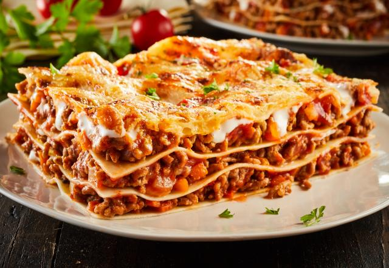

Assando
- Cubra o refratário com papel-alumínio e leve ao forno preaquecido a 180°C por 30 minutos.
- Retire o papel-alumínio e asse por mais 10 a 15 minutos para gratinar.
- Deixe descansar por 5 a 10 minutos antes de servir.
Pronto! agora é só apreciar
